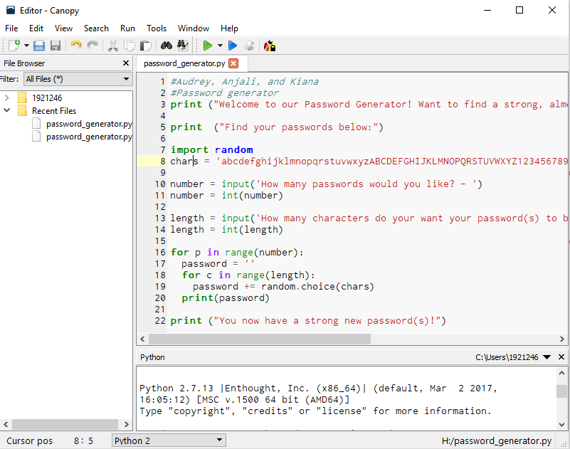

Have fun programing with Lightbot

Make fun games and code with Scratch

We used Scratch to make a fun interactive game. Scratch uses block code which makes it simple to program.
Play my game below! Try and catch the fish by moving the arrow keys.
With using MIT App Inventor we made Tic Tac Toe. MIT App Inventor is very similar to Scratch because it uses the block feature to programing. However, MIT App Inventor is more complicated.
This is what our game looks like!

Our programing for Tic Tac Toe on MIT App Inventor.

Using Python we made an interactive fiction game.
Our game is about a sloth getting chased by a jaguar. The adventure can continue or end depending on your choices.
Try to play!
This is our password generator. We coded this using Python in Canopy.
This is our code in Canopy and the program when you run it.
For our next project we used Canopy to manipulate an image.
This project was hard to figure out at first and took a lot of trial and error.
We chose a picture of Shrek and Donkey from the movie Shrek. Here is our image manipulation! We changed some pixels colors, warped, and resized the image.
Here is our code.
For our next project we had to make a graph on information we were insterested in. My group chose SAT scorces and the amount of people who score in certain ranges.
Here is the code for our graph>
Using NetLogo we changes a HIV simulation. We made modifications to the color of the people, the starting percentage of those with HIV, and the chance of getting HIV increased.